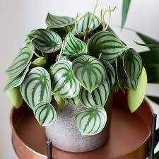

Peperomia

About Peperomia
Peperomia is a versatile genus of houseplants, admired for their distinctive leaf shapes and compact growth habits. These plants are known for their attractive, often variegated foliage and are generally easy to care for.
Care Tips:
- Light: Prefers bright, indirect light but can adapt to low light conditions.
- Water: Allow the soil to dry out between waterings; avoid letting the plant sit in water.
- Temperature: Enjoys temperatures between 65-75°F (18-24°C).
- Fertilizer: Use a balanced fertilizer every 1-2 months during the growing season to encourage healthy growth.